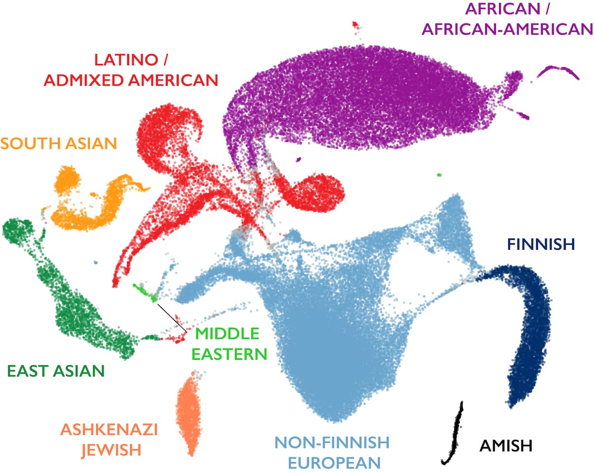

BSMS205 · Genetics
Population Structure
Chapter 21 · Part IV · Population Genetics
Welcome to Chapter twenty-one, Population Structure. Last time we defined allele frequency. Today we ask a follow-up question: when I measure a frequency, which population am I measuring it in? Because, as we will see, the same variant can have dramatically different frequencies in different human groups. Understanding why is our topic today.
Today's central question
Why do the same variantsdifferent frequencies
Here is the question that drives the whole chapter. Why do the same variants have different frequencies in different human populations? This is not a trivial observation. It is a deep fact about human biology, and it turns out to be a record, written in our genomes, of migration, isolation, and adaptation over tens of thousands of years. By the end of this lecture, you will be able to read that record.
Variation is not randomly distributed
Same variant · common in one group · rare in another
Patterns are gradients , not sharp boundaries
History has left traces in our genomes
And we can read them
Here is the fundamental observation. Genetic variation is not randomly distributed across humanity. The same variant that is common in one population can be rare or absent in another. These differences are not sharp boundaries. They form smooth gradients — like colors blending across a map. But they are real, and they are measurable. They reflect ancient migrations, population bottlenecks, and the mixing of groups over thousands of years. Our genomes carry a record of that history, and we can read it.
Why this matters
Scientifically
GWAS false positives if ancestry is not controlled
Pathogenic vs benign depends on population baseline
Ethically
Population &neq; "race"
Differences are gradients , not divisions
Why does this topic matter? For two reasons. Scientifically, if you run a genome-wide association study and do not account for ancestry, you will get false positives — variants that look associated with disease but are really just differences in ancestry between cases and controls. Interpreting a variant as pathogenic also depends on the population baseline. A variant common in healthy people of one ancestry is probably benign, even if it is rare overall. Ethically, we need to be clear that population is not the same as race. Genetic differences between human groups are subtle gradients, not fundamental divisions. The concept of biological race has no basis in genetics.
Roadmap for today
What is population structure?
Race · ethnicity · ancestry · population
How structure arises (five mechanisms)
Detecting it with PCA and UMAP
Concrete selection examples
Quantifying with FST
Why it matters in practice
Here is how today will flow. First, we define population structure precisely. Second, we separate four terms that are often confused in everyday speech — race, ethnicity, ancestry, and population. Third, we walk through five evolutionary mechanisms that create structure. Fourth, we learn the two methods most used to detect and visualise it, called PCA and UMAP. Fifth, we look at three concrete examples of selection driving population differences. Sixth, we introduce the main statistic, F S T, that quantifies how different two populations are. And finally, we talk about why this all matters for medicine and research. Let's begin.
§ 1
What Is
Let's start with a clean definition.
A precise definition
Population structure = systematic differences in allele frequencies among groups within a species.
Detectable, but subtle
Most variation is within populations, not between
Not about categorising humans — about reading history
Population structure refers to systematic differences in allele frequencies among subgroups within a species. For humans, we detect modest frequency differences between continental groups — African, European, East Asian, South Asian, and so on. I want to be clear about a key fact that will come back several times today: most human genetic variation exists within populations, not between them. The between-population differences are real, but they are a minority of total variation. So population structure is not about categorising humans into boxes. It is about reading the history that differential gene flow has written into our genomes.
The out-of-Africa context
Humans evolved in Africa
Migration out began roughly sixty to one hundred thousand years ago
Geographic separation limited gene flow
Once gene flow is limited, populations diverge
Here is the history that set up everything we observe today. Humans evolved in Africa. Somewhere between sixty thousand and one hundred thousand years ago, groups began migrating out of Africa and onto other continents. Oceans, deserts, and mountain ranges slowed the exchange of genetic material between these groups. This limitation of gene flow is the key condition. Once gene flow is limited, populations inevitably start to diverge — not because one group is superior or inferior, but because random genetic processes and local selection accumulate different signatures in different places.
Three forces drive divergence
Mutation — new variants arise independently in each populationDrift — random frequency changes, stronger in smaller populationsSelection — different environments favour different alleles
The result: smooth gradients · never sharp boundaries.
Three evolutionary forces drive populations apart once they are isolated. First, mutation. New variants arise independently in each population, by chance. Some will rise in frequency in one place while remaining absent in another. Second, drift. Random fluctuations in allele frequency, generation by generation, especially strong in small populations. Over enough generations, drift alone will cause two populations to diverge even if they started identical. And third, selection. Different environments favour different alleles. We will see three striking examples later. The end result of all three forces working in parallel is what I just showed on the previous slide — smooth frequency gradients across the globe, never sharp boundaries.
§ 2
Race · Ethnicity ·
Let's now separate four terms that are often treated as synonyms in everyday speech but have very different meanings in genetics.
Four terms · very different meanings
Concept What it is Nature
Race Socially defined by perceived traits Social construct Ethnicity Cultural identity (language, tradition) Cultural Ancestry Genetic lineage · where ancestors lived Biological · probabilistic Population Group with shared gene flow Biological · operational
Look at this table carefully. Race is a socially defined category, based on perceived physical traits like skin colour. It is a social construct that varies by culture and historical period. Ethnicity is about cultural identity — language, nationality, shared traditions. You can be ethnically French without French ancestry, and vice versa. Ancestry is biological and probabilistic. It describes the proportion of your DNA that came from populations in various geographical regions. Population is the biological unit geneticists actually work with — a group whose members interbreed more often with each other than with outsiders. Race and ethnicity are not used as biological concepts in modern human genetics. Ancestry and population are.
Why "race" is not a genetic category
No set of genes cleanly separates humans into "races"
Skin colour is controlled by a handful of genes
Two people of the same "race" can be more different genetically
Let's unpack why race is not a useful genetic category. There is no set of genes that cleanly separates humans into racial groups. Skin colour, the trait that defines most lay racial categories, is controlled by just a handful of pigmentation genes. Those genes vary continuously across populations. Because of this, two people classified as quote white unquote can easily be more genetically different from each other than either one is from someone classified as quote black unquote. This is not a philosophical point. It is an empirical one. And because racial categories have also been misused historically to justify discrimination, geneticists avoid using race as a biological variable.
What geneticists use instead
Ancestry
Probabilistic
50% European / 30% East Asian / 20% AfricanFrom allele frequency patterns
Population
Operational
Defined by gene flow
Used to correct GWAS bias
So what do geneticists use instead of race? Two things. Ancestry is a probabilistic description. Rather than saying someone is black or white, you might say their ancestry is fifty percent European, thirty percent East Asian, twenty percent African — inferred from patterns in their allele frequencies. And population is an operational concept, defined by patterns of gene flow and interbreeding. A population is useful when it lets us correct for ancestry-related confounding in a study. These concepts preserve the real biological signal — history and gene flow — while discarding the social baggage of race.
§ 3
How Structure
Let's now walk through the five evolutionary mechanisms that create population structure, one by one.
Geographic isolation and drift
Oceans, deserts, mountains limit gene flow
Once gene flow drops, drift accumulates differences
Longer isolation → more divergence
Even identical starting populations drift apart
The first mechanism is geographic isolation combined with drift. When groups are separated by oceans, deserts, or mountain ranges, gene flow between them is reduced. And once gene flow drops, random drift in each group accumulates changes. Crucially, even if two populations start out genetically identical, isolation guarantees they will drift apart over time. The longer the isolation, the more the divergence. This is why the longest-separated human populations, like Indigenous Australians, show some of the most distinctive genetic signatures.
Founder effects
New population from a small founding group
Carries only a fraction of ancestral diversity
Some alleles absent · others over-represented by chance
Reduced diversity persists as the population grows
Second mechanism: founder effects. Imagine a new population is established by just a small number of individuals — a ship lands on an island, a tribe migrates over a pass. Those founders carry only a fraction of the genetic diversity of the original ancestral population. Some alleles get lost entirely, because no founder happened to carry them. Others end up over-represented by pure chance. As the new population grows from that small base, it keeps this reduced diversity, and the frequency distortions become permanent features of the new group.
Case study · Finnish Disease Heritage
Population descended from ~four thousand founders , around four thousand years ago
Seventeenth-century famine → one-third of population lost
Thirty-six recessive disorders enriched in FinlandEach disease: a single founder mutation drifted to high frequency
Peltonen et al. 1999 · Norio 2003
Here is a textbook example. The Finnish population descended from roughly four thousand founding individuals about four thousand years ago. Then, in the seventeenth century, a severe famine killed about one-third of the population. These two events — the small founding group and the later bottleneck — left distinctive traces. Finland has what is called the Finnish Disease Heritage: thirty-six genetic disorders, mostly recessive, that are far more common in Finland than anywhere else in the world. Each one is usually caused by a single founder mutation that happened to drift to high frequency during the population expansion. This is founder effect and bottleneck combined, written into real human health.
Population bottlenecks
Population size drops sharply — disease, famine, migration
Rare alleles lost by chance during the squeeze
Recovered population has reduced diversity
Genomic signature: fewer rare variants, longer LD blocks
Third mechanism: population bottlenecks. These occur when a population's size drops sharply, typically because of disease, famine, or forced migration, and then recovers. During the bottleneck, rare alleles are disproportionately lost, because only a small number of individuals survive to pass on their genes. The recovered population is less diverse than it was before. Bottlenecks leave characteristic genomic signatures — fewer rare variants, longer stretches of correlated alleles known as linkage disequilibrium blocks, and overall reduced heterozygosity. We can detect ancient bottlenecks in modern genomes even when the historical event happened thousands of years ago.
Admixture · the mosaic genome
Previously separated populations interbreed
Offspring inherit blocks of each ancestry
Modern examples: African Americans, Latino populations
A recent signature · easily detected in modern genomes
Fourth mechanism: admixture. This is the mixing of previously separated populations. When two groups that have been isolated for thousands of years start interbreeding, their offspring inherit a mosaic of ancestries — blocks of DNA from one ancestry, blocks from another. In modern populations, we see clear admixture signatures. Many African Americans have substantial European ancestry alongside their West African ancestry, reflecting the history of the transatlantic slave trade. Latino populations typically show a three-way mix of Indigenous American, European, and African ancestries. Admixture is very recent on evolutionary timescales, so it leaves long, detectable blocks of each source ancestry along the chromosomes.
Selection and local adaptation
Different environments favour different alleles
Strong local selection → sharp frequency differences
Three iconic examples today:
Lactose tolerance in dairying populations
Sickle cell in malaria zones
Altitude adaptation in Tibetans
Fifth and final mechanism: natural selection creating local adaptation. Different environments favour different alleles. When selection is strong and local, it can drive sharp frequency differences between populations — much sharper than drift alone would create. We will spend time on three textbook examples later in this lecture: lactose tolerance in dairying populations, the sickle cell allele in malaria regions, and high-altitude adaptation in Tibetan highlanders. Each one shows selection reshaping a specific part of the genome in response to a specific environmental pressure. Together, these five mechanisms — isolation with drift, founder effects, bottlenecks, admixture, and local selection — are the full toolkit that created the pattern of human genetic variation we see today.
§ 4
Detecting Structure
Now let's see how we actually detect and visualise this structure in real genomic data.
The data problem
Each person: millions of SNPs
Each SNP is a dimension
We cannot visualise millions of dimensions
Need to compress to two or three dimensions
Here is the core data challenge. When you sequence a human genome, each person is described by millions of single-nucleotide polymorphisms, each of which can be thought of as one dimension in a very high-dimensional space. A dataset of thousands of people is a cloud of points in a space with millions of axes. That is impossible to visualise directly. So we need a way to compress all that information down to two or three dimensions while preserving the essential structure. This is called dimensionality reduction. The two methods you will see most often are P C A and U MAP.
PCA · Principal Component Analysis
Finds new axes that capture the most variance
PC1 : direction of largest genetic spreadPC2 : next largest, perpendicular to PC1Linear — fast, interpretable, widely used
P C A stands for Principal Component Analysis. It is a mathematical method for finding the best axes to describe your data. Think of it as finding the best vantage points to photograph a crowd. The first principal component, P C one, is the direction along which the data spreads the most. The second, P C two, is the direction of the next largest spread, chosen to be perpendicular to the first. P C A is linear, meaning it finds straight-line directions. It is fast, mathematically well understood, and it is the workhorse of population genetics analysis. When you see a plot of a human genetic cohort, it is almost always a P C one versus P C two scatter.
What PCA shows in humans
PC1 typically separates African vs non-African ancestryPC2 typically separates European vs East Asian PC3+ captures finer substructure within continents
In human data, the P C A axes line up with human migration history in a way that is almost uncanny. P C one, the direction of biggest spread, typically separates African from non-African ancestry. That is because the out-of-Africa migration is the oldest and deepest split in human history, so it contributes the most variance to the data. P C two usually separates European from East Asian ancestry — the second biggest split. And higher components, P C three and beyond, capture finer substructure, like differences within Europe or within East Asia. When you plot every individual on P C one versus P C two, you literally see the shape of human migration history laid out as a scatter plot.
UMAP · when PCA is too linear
PCA is linear · finds straight-line directions
Real structure is sometimes curved
UMAP preserves both global and local structure
Better for seeing fine-scale sub-populations
P C A works well, but it is linear, and sometimes the real structure in your data is not. U MAP, which stands for Uniform Manifold Approximation and Projection, is a more flexible non-linear alternative. It is designed to preserve both global structure — like the overall positions of continental groups — and local structure — like fine-scale clusters within a region. The practical effect is that U MAP often separates subpopulations more clearly than P C A, especially when ancestry mixing is complex. Many recent large-cohort papers use U MAP rather than P C A for their headline visualisation.
gnomAD · human diversity on one figure

gnomAD v3.1 · ~141,000 genomes · UMAP projection. Clusters are distinct but blend at the edges — continuous gradients, not sharp boundaries.
This is the figure I want you to remember from this chapter. It shows the U MAP projection of roughly one hundred forty-one thousand human genomes from gnomAD. Each dot is one individual, placed in two dimensions based on millions of genetic variants. You can see the major ancestry groups as coloured clusters — African in purple, European in blue, East Asian in pink, South Asian in green, Latino in orange. Three things to notice. First, the clusters are clearly distinct. Structure is real. Second, the clusters blend at the edges — admixed individuals occupy the space between groups, showing that boundaries are continuous, not sharp. Third, the African cluster is by far the most spread out. That is because African populations are the oldest and have accumulated the most genetic diversity. The non-African clusters are tighter because they all descend from the smaller founder groups that left Africa. One picture, a complete summary of human genetic history.
Why this tooling matters
Used as GWAS covariates — corrects ancestry bias
Reveals admixture and migration patterns
Demonstrates genetic variation is continuous , not categorical
Why is dimensionality reduction such a central tool? Three reasons. First, the leading principal components are routinely included as covariates in G W A S analyses. This adjusts for ancestry-related allele frequency differences and prevents the false positives I mentioned at the start of the lecture. Second, the visualisations themselves reveal admixture and migration patterns — you can literally see the history in the shape of the clusters. And third, these tools make a philosophical point visible. Human genetic variation is continuous, not categorical. The clusters are not rigid boxes. They are fuzzy regions that merge into each other. That is the most important thing any non-geneticist should take away from a U MAP plot.
§ 5
Selection in Action ·
Let's now look at three concrete examples of selection creating dramatic population differences in allele frequency. Each one is a textbook case of local adaptation.
Example 1 · Lactose tolerance
Variant rs4988235 upstream of LCT gene
Keeps lactase production active into adulthood
Northern Europe: seventy to ninety percent
East Asia: under ten percent
Under selection for ~seven thousand five hundred years
Tishkoff et al. 2007 · Bersaglieri et al. 2004
Our first example is lactose tolerance. Most mammals lose the ability to digest milk sugar after weaning. In humans, a regulatory variant called r s four nine eight eight two three five, located about fourteen kilobases upstream of the L C T gene, keeps the lactase enzyme producing into adulthood. In Northern European populations, this variant reaches frequencies of seventy to ninety percent. In East Asian populations, it is below ten percent. That is an enormous frequency difference, created in a remarkably short time. Selection has been acting on this variant in Europeans for roughly seven thousand five hundred years — coinciding with the rise of dairy farming. Culture shaped selection, which shaped the genome. A human behaviour literally became a genetic signature.
Example 2 · Sickle cell and malaria
HbS allele in HBB gene · single amino acid change
Sub-Saharan Africa (malaria zones): ten to twenty percent
Outside malaria zones: nearly absent
Heterozygotes: protection against falciparum malaria
Homozygotes: sickle cell disease
Piel et al. 2010 · Gong et al. 2015
Our second example is the sickle cell allele. This is a single amino acid change in the H B B gene, encoding the beta chain of haemoglobin. In sub-Saharan African populations where falciparum malaria is endemic, the sickle cell allele reaches frequencies of ten to twenty percent. Outside malaria zones, it is nearly absent. The reason is a classic case of balanced selection. Heterozygotes — people with one copy of the sickle cell allele and one copy of the normal allele — gain substantial protection against severe malaria. Homozygotes — people with two copies — suffer from sickle cell disease, which historically was fatal before modern medicine. So the allele is maintained at intermediate frequency by the opposing forces of malaria protection in heterozygotes and disease in homozygotes. The geographical distribution of the sickle cell allele closely mirrors the historical distribution of malaria — a beautiful confirmation of the balanced selection model.
Example 3 · Tibetan altitude adaptation
Living above four thousand metres — severe oxygen scarcity
Variants in EPAS1 and EGLN1 under strong selection
Lower haemoglobin → avoids polycythemia
EPAS1 haplotype: ~87% Tibetans vs ~9% Han Chinese
Inherited from Denisovans — archaic admixture
Beall 2010 · Yi 2010 · Huerta-Sánchez 2014
Our third example is Tibetan high-altitude adaptation. Tibetan highlanders live routinely above four thousand metres elevation, where oxygen is scarce. Variants in the genes E P A S one and E G L N one show the strongest selection signals in the Tibetan genome. These variants result in lower haemoglobin concentration in Tibetans, which paradoxically protects them from polycythemia — the dangerous overproduction of red blood cells that causes altitude sickness in lowlanders. The striking number: the E P A S one adaptive haplotype is present in about eighty-seven percent of Tibetans but only about nine percent of Han Chinese, who share very recent common ancestry. And here is the twist. That E P A S one haplotype did not arise by new mutation in Tibetans. It was inherited from Denisovans, an archaic hominin species, through admixture tens of thousands of years ago. This is called adaptive introgression — borrowing a useful allele from another species. It means population structure, admixture, and selection all interact in the story of how humans adapted to new environments.
§ 6
Quantifying Difference:ST
So far we have talked about population differences qualitatively. Let's put a number on them.
The Fixation Index
FST measures how much allele frequenciesdiffer between populations relative to total variation.
FST = 0 · populations identicalFST = 1 · populations completely different
The main statistic for quantifying population difference is called F S T, the fixation index. Mathematically, F S T compares how much allele frequencies differ between populations to how much total variation exists across all populations combined. It ranges from zero to one. F S T of zero means the populations have identical allele frequencies — no structure. F S T of one means the populations are completely differentiated — they share no variation whatsoever. Real human populations sit somewhere in between. Where exactly, we will see in a moment.
The striking human number
0.05 – 0.15
typical FST between continental groups
85 – 95% of human genetic variation exists within populations,
Here is the headline number. F S T between major continental human groups — African, European, East Asian, and so on — typically falls between zero point zero five and zero point one five. That range has a striking interpretation. It means eighty-five to ninety-five percent of all human genetic variation exists within any single population, and only five to fifteen percent exists as differences between populations. Two random people from the same population differ at millions of S N Ps. Two random people from different continents differ at only slightly more S N Ps. Despite visible differences in appearance, humans are remarkably similar genetically. The differences we perceive — skin colour, facial features — are controlled by a tiny fraction of the genome.
FST varies across the genome
Most regions: low FST — similar across populations
Some regions: high FST — differentiated by selection
Example: skin pigmentation genes between African and European populations
High-FST scans → candidate regions of local adaptation
F S T is not the same everywhere in the genome. Most genomic regions show low F S T, meaning allele frequencies are similar across populations. But a small number of regions show high F S T, meaning populations are sharply differentiated. These high F S T regions are the fingerprints of local adaptation. A classic example is the skin pigmentation genes, which show very high F S T between African and European populations, reflecting adaptation to different levels of ultraviolet radiation. Researchers routinely scan the genome for high F S T regions to discover new examples of local adaptation. That scan-based discovery method is how many of the selection examples we just discussed were first identified.
§ 7
Why It Matters
Let's now turn to the practical implications. Understanding population structure is not just academic. It has concrete consequences for research and medicine.
Correcting GWAS · the main practical use
Cases and controls with different ancestry ratios → false positives
Any ancestry-differentiated variant looks associated
Fix: include leading PCs as covariates
Without correction: GWAS is flooded with spurious hits
The single most important practical use of population structure is correcting confounding in genome-wide association studies. The problem is simple. If your disease cases happen to contain more people of one ancestry than your controls, any variant that differs in frequency between ancestries will look associated with disease — even if it has nothing to do with biology. The fix is also simple in concept. You include the leading principal components as covariates in the statistical model. This effectively adjusts for ancestry-related frequency differences, so you see only the true disease associations. Without this correction, G W A S results would be unreadable. With it, we get the clean catalog of genuine disease loci we rely on today.
Other applications
Tracing human history — migration, admixture, ancient splitsVariant interpretation — common-in-ancestry = likely benignEquity — polygenic scores trained on one ancestry fail in othersMulti-ancestry cohorts → accuracy and fairness
Beyond G W A S correction, population structure has three other major applications. First, tracing human history. Migration routes, admixture events, and ancient population splits are all readable from modern genomes. Population genetics is an archaeological tool. Second, variant interpretation in clinical genetics. A variant that is common in healthy individuals of one ancestry is almost certainly benign, even if it is rare in the global population. Without population-specific frequency data, you will misinterpret variants. Third, equity. Most early G W A S and polygenic score studies were conducted on Europeans. Those scores do not transfer well to other ancestries. Expanding to multi-ancestry cohorts improves both statistical accuracy and fairness — ensuring that people of all ancestries benefit from genomic medicine.
§ 8
Summary
Let's wrap up with the core takeaways.
What to take away
Population structure = systematic frequency differences among groups
It arises from drift, founder effects, bottlenecks, admixture, selection
PCA / UMAP show variation is continuous , not categorical
FST for continental groups: 0.05 – 0.15 — most variation is within
Race &neq; population. Ancestry ≠ race.
Five things to remember. One, population structure is the systematic pattern of frequency differences between subgroups. Two, it arises from five evolutionary mechanisms working in parallel: drift under isolation, founder effects, bottlenecks, admixture, and local selection. Three, dimensionality reduction methods like P C A and U MAP make the structure visible, and they show that variation is continuous, not categorical. Four, the F S T statistic quantifies the structure, and the striking headline number is that only five to fifteen percent of human genetic variation separates continental populations. Most variation is within any one group. And five, race is a social construct, not a genetic category. Modern genetics works with ancestry and population, not race.
Next lecture
How do variants travel together
Chapter 22 · From Mendel to Morgan — Discovery of Linkage
One question to leave you with. We have been treating each variant independently so far. But variants do not float around alone. They sit on chromosomes, physically linked to their neighbours. What does that mean for inheritance? When are two variants inherited together, and when are they separated? The answer begins with Mendel, who said everything assorts independently, and ends with Morgan, who discovered it does not. We will pick up that story in Chapter twenty-two, From Mendel to Morgan, the Discovery of Linkage. See you then.